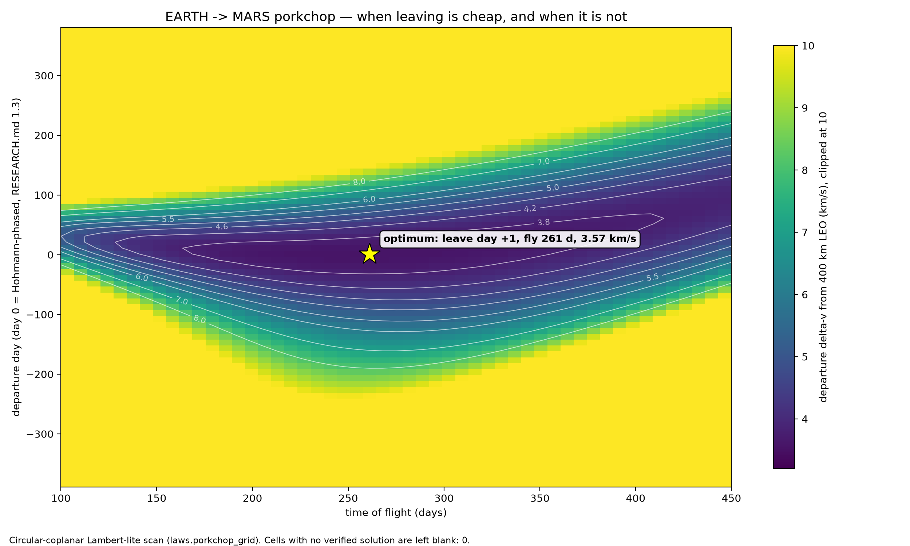
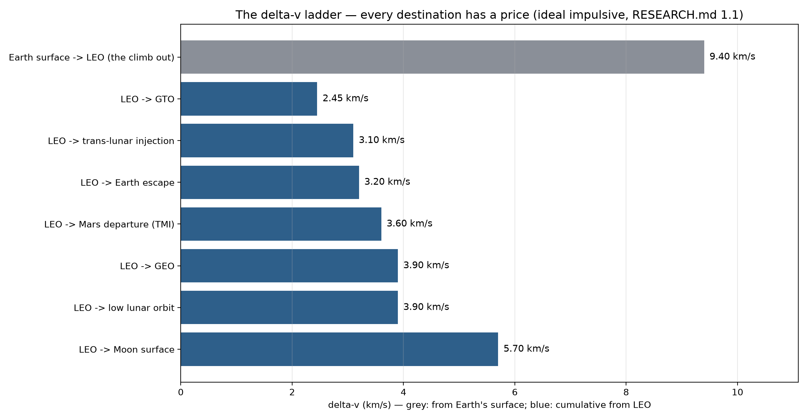

Project · Space journey simulation
LONGSHOT
You don't build the ship. You inherit it — and then you have to get her home.
The game, as designed
You don't build a spaceship — you inherit someone else's used one, quirks, biography and all. A whole star system is rolled fresh: its planets priced in fuel and timing, with somebody waiting at the far end. You fly real orbital mechanics with every number shown in plain words — what a burn costs, when a window opens, why the ship is complaining. Things break at the worst moments, with readable causes and usually a stupid, heroic way to save it. Stranding is common; death is rare. And you push one planet further because it's right there and cheap this spring.
The design's rule, set by the owner: addictive first — then different, detailed, innovative. Randomness is the content engine, chaos is a tuned system with a budget and a cap, and the mathematics underneath is the real thing: orbits are computed analytically, never stepped, so they cannot drift; the price the game quotes you for a burn is the price you pay, by construction, because the planner and the physics read the same world model. The whole journey is drawn in the studio's 2.5D style — one continuous scene you can zoom from a valve on the hull to the whole system.
What exists today
Honestly inventoried, in the order it was made:
- A research file (2026-11-10): real fuel prices for real manoeuvres, transfer windows as price curves, what Kerbal Space Program left undone (systems depth; information it hid), and what The Long Drive does to be addictive — random vehicle, far destination, loot that knows where it is.
- A completed design: engine first, with 24 named inventions, each written down with the prototype that could kill it. The engine's claim in one line: one world model, read by the physics, the planner, the generator and the renderer alike.
- A working math bench — the studio's math tool, ported to orbital mechanics before a line of game code existed. Its self-check reproduced 12 of 12 published reference values from its own laws: a 400 km orbit's period (92.41 against 92.6 minutes), the Earth–Mars transfer time (258.9 against 259 days), the synodic rhythm (779.9 against 780 days), the fuel price of leaving for the Moon (3.084 against 3.1 km/s). Its Earth–Mars scanner, told nothing, found its cheapest crossing at 261 days and 3.57 km/s — the textbook answer, rediscovered.
- A private repository, created 2026-11-10.
- The start of the first engine milestone, E1 “The Gravity Toy”: begun on 2026-11-10 — star, planet, moons and one ship in a single zoomable scene, with a self-check harness whose whole job is trying to falsify the design's claims — then deferred with the project, mid-milestone. The code stands in its repository as it was left.
What does not exist yet: screenshots. There is no game to screenshot. The two charts below are the design bench's own output — real artefacts of the project, captioned as what they are.


The road
The road, as designed — it waits with the project. Engine milestones first, then the game: E1 The Gravity Toy (the falsifier arena) → E2 The World Machine (a whole generated system) → E3 The Continuum (the calendar that computes its own future) → E4 The Living Ship (power, heat, air, damage — one conserving stock system) → 0.1.0 “First Light”, the smallest living version of the journey: a four-stop ladder and the far light beyond it, three ship archetypes, trade in mass, and a chronicle card worth sharing. Sizes are estimates and carry the design's own ±50%: the engine and First Light together run to roughly a season of work. The contract's exclusions, in one line: no ship-building editor, ever; no colonies or logistics webs; no second star system until the first one is fun.